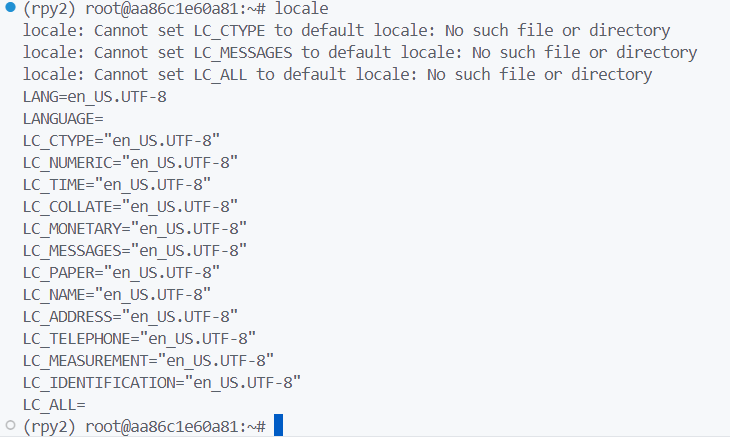

VSCode R 오류?
1 문제상황
- vscode 터미널에서 R을 실행하면 다음과 같은 경고 메세지와 함께 R이 바로 종료됨
During startup - Warning messages: 1: Setting LC_CTYPE failed, using “C” 2: Setting LC_COLLATE failed, using “C” 3: Setting LC_TIME failed, using “C” 4: Setting LC_MESSAGES failed, using “C” 5: Setting LC_MONETARY failed, using “C” 6: Setting LC_PAPER failed, using “C” 7: Setting LC_MEASUREMENT failed, using “C”
*** caught segfault *** address (nil), cause ‘memory not mapped’
Possible actions: 1: abort (with core dump, if enabled) 2: normal R exit 3: exit R without saving workspace 4: exit R saving workspace Segmentation fault (core dumped)
2 윈도우 터미널에서 R을 실행시킨 경우 (이상 없음)
- R이 있는 다른 가상환경도 마찬가지로 잘 됨
3 VSCode 터미널에서 R을 실행시킨 경우 (R이 있는 모든 가상환경 같은 결과)
- 마지막 가상 환경은 오늘 오후에 만든 새로 만들었음에도 같은 결과
4 저번주에 연결한 Rstudio
- 위의 경고 메세지들을 검색했을 때 나오는 locale에 대한 경고 메세지가 저번주에 Rstudio를 연결한 후 제일 먼저 실행했을 때 나오긴 했었음
- 그러나 계산 등은 문제 없어서 당시에는 그냥 넘어감
5 오늘 연결한 Rstudio (VSCode 터미널로 연결)
- 오늘은 위의 경고도 뜨지 않고 실행은 전과 같이 잘 됨 (.R파일을 새로 만들어서 저장도 함)
- Rstudio의 터미널에서 위의 작업을 해봤을 때 경고문도 뜨지 않고 계산 작업도 완료 후 종료 가능함
6 VSCode 터미널로 연결한 Jupyter lab
- Python 커널에 R을 붙이는 작업을 실행
- 첫번째 코드를 실행시키자 위에서 자주 본 경고문이 나옴
- 그래도 실행은 잘 됨
- 해당 Jupyter lab의 터미널에서 R을 실행해보니 경고문은 뜨나 VSCode 터미널과 달리 계산은 할 수 있음
- Jupyter lab 연결을 실행시킨 VSCode 터미널 결과를 봐도 하단에 익숙한 경고문이 있음
7 윈도우 터미널로 연결한 Jupyter lab
- 윈도우 터미널에서 Jupyter lab을 연결하여 접속한 뒤 위와 같은 작업을 실행함
- 이번에는 익숙한 경고문이 뜨지 않음
- 결과는 당연히 잘 실행됨
- 터미널로 R을 실행시켜도 경고문 없이 동작이 잘 됨
- Jupyter lab 연결을 실행시킨 윈도우 터미널 결과를 봐도 익숙한 경고문은 존재하지 않음
8 locale
위의 내용으로 구글링, Chat GPT 검색을 하면 locale 파일을 수정하라고 하는 경우가 많음
(C 등으로 잘못 되어 있는 경우를 en_US.UTF-8로)
그러나 VSCode 터미널에서 locale을 확인하면 빈칸인 경우도 있긴 하나
이미 en_US.UTF-8인 경우가 대부분

찾아본 해결책은 Sudo로 다른 파일을 설치하거나 환경변수를 건드리는 경우가 대부분이라 하지는 않음
윈도우 터미널에서 locale을 실행하면 결과가 또 다름
빈칸은 위와 비슷한 것 같음
- Chat GPT에게 물어보면 맞는 말인지는 모르겠으나
- UTF-8을 지원하지 않는다고 함
9 문제 정리
- 오늘 수업 마지막 쯤에 VSCode 터미널로 R을 실행시키다가 해당 문제를 발견
- 그러나 원래 멀쩡했는데 뭐를 잘못 건드려서 이렇게 된건지 아니면 원래 이랬는지 모르겠음
- 저번 주에는 해당 컴퓨터를 안 쓴 경우도 많았고 (186 컴퓨터?) VSCode를 쓰지도 않았어서 해당 문제를 인식하지 못함
- 지금도 윈도우 터미널을 사용하면 전혀 문제가 없어 보임
- VSCode 터미널을 사용해도 터미널 자체에서 R을 실행 못하는 거 빼면 Jupyer lab, Rstudio 사용에 문제는 없음 (경고문을 무시한다면)
- 그러나 저번주에 Rstudio를 처음 연결하여 실행했을 때 locale과 관련한 경고가 뜬 점
- 윈도우 터미널에서 경고는 뜨지 않지만 locale이 UTF-8을 지원한다고 볼 수 없는 점 (Chat GPT 의견)
- VSCode 터미널에서 locale 상에서 대부분 en_us.UTF-8로 설정은 되어 있지만 그렇지 않다고 경고문이 뜨는 점
- VSCode 터미널에서는 R을 실행조차 못하는 점
- 등을 고려하면 locale 관련 문제가 없다고 보기는 어려운 것 같음